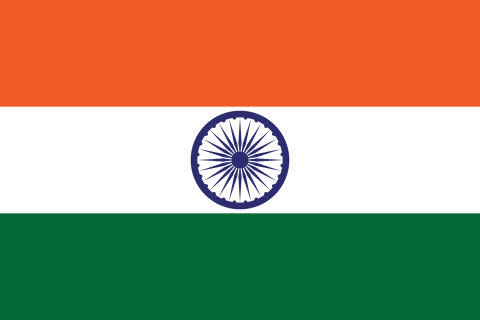
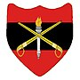
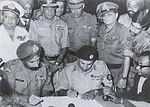
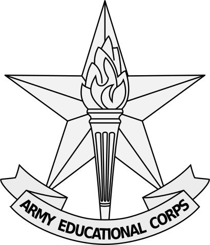
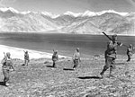
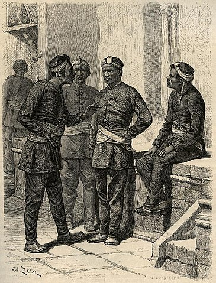

Flag of India

-
The National flag of India, colloquially called
Tiraṅgā (The Tricolour), is a horizontal rectangular
Tricolour Flag, the colours being of India saffron, white and
India green; with the Ashoka Chakra, a 24-spoke wheel, in navy blue at
its centre.[1][2] It was adopted in its present form during a meeting of
the Constituent Assembly held on 22 July 1947, and it became the
official flag of the Union of India on 15 August 1947. The flag
was subsequently retained as that of the Republic of India. In India,
the term "Tricolour" almost always refers to the
Indian National Flag.
INDIAN ARMY

Ensign
of the Indian Army
-
Indian Army is the land-based branch and largest component of the
Indian Armed Forces. The President of India is the Supreme
Commander of the
Indian Army
Army Training Command

-
2013. An introduction Indian Army John Pike. "Army
Training Command (ARTRAC)". globalsecurity.org. Retrieved 2 August 2015.
In the works for
Army Training
Indo-Pakistani War of 1971

-
Indo-Pakistani War of 1971 (redirect from Indian invasion of East
Pakistan) Indian Army, including
79,676 to 81,000 uniformed personnel of the Pakistan Armed Forces
along with some Bengali soldiers who had remained loyal to Pakistan.
Army Education Corps (India)

-
The Army Education Corps of India is a program run by the Indian
Army that develops soldiers and officers of all ranks in a variety of
disciplines. The centre provides education in both combat and non-combat
operations.
Sino-Indian War

-
Perceptions as to the Line of Actual Control and resume the bilateral
army exercises between the Indian and Chinese army from early 2012.
Indian gallantry
Gurkha

-
Nepalis and Nepali-Speaking Indian People and are recruited for the
Nepali Army (96,000), Indian Army (42,000), British Army (4,010), Gurkha
Contingent